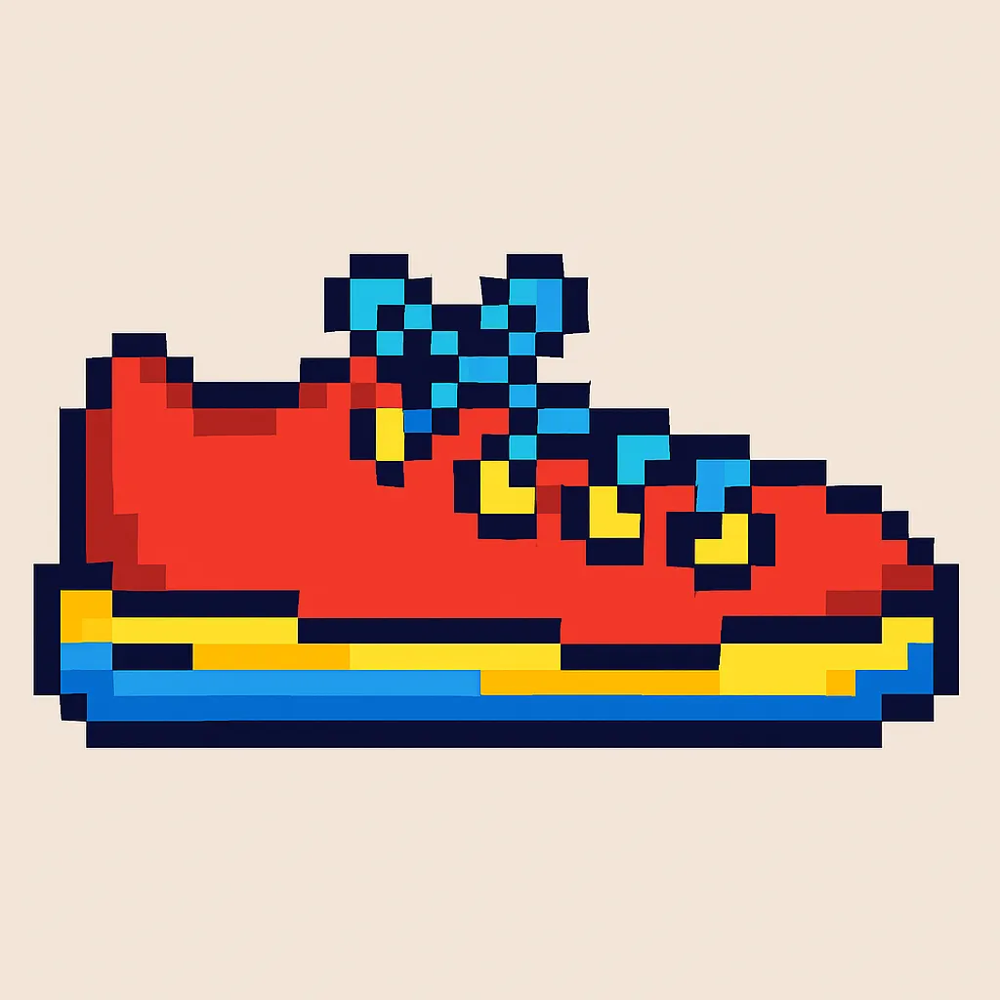
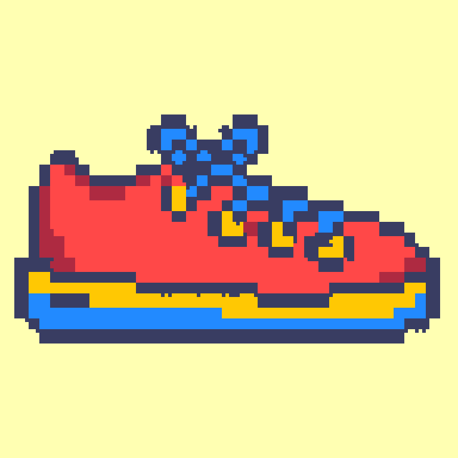
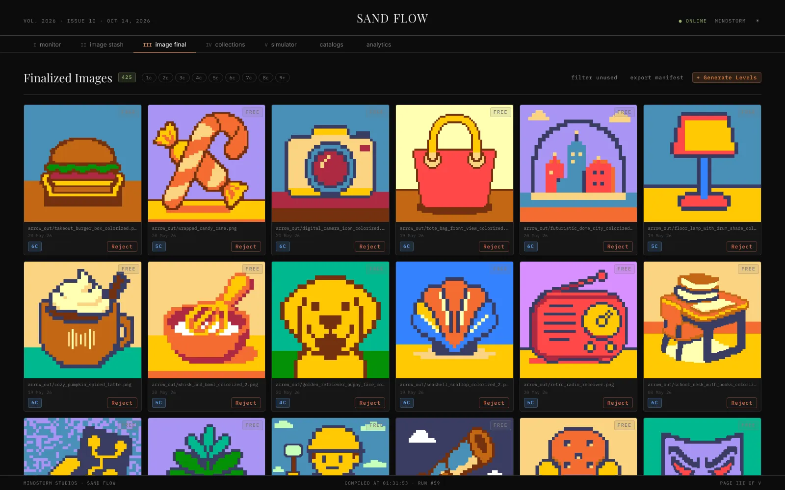
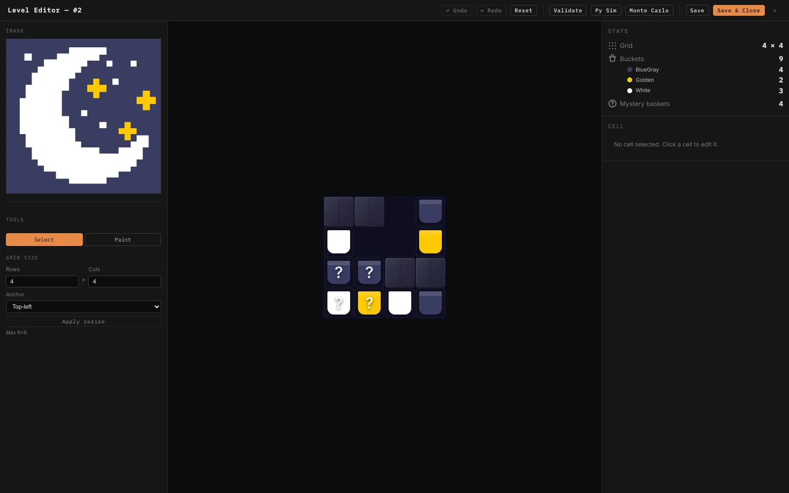
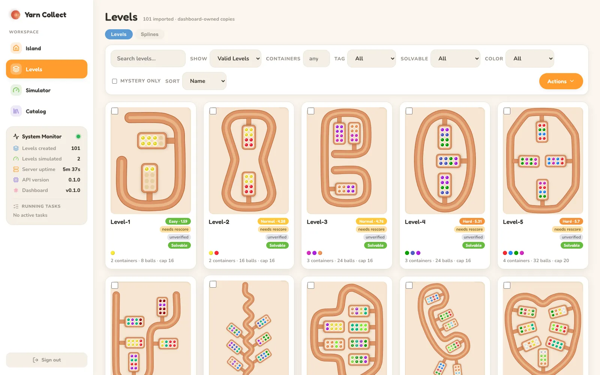

Hand-building hundreds of puzzle levels doesn't scale, and neither does eyeballing their difficulty. For two live Mindstorm games I built the tools that generate, check, tune and ship levels, so design time goes into decisions rather than busywork.
RoleDesigner & tool builder
GamesSand Flow, Yarn Collect
Year2025 – 2026
StackPython · FastAPI · React · Docker
The problem
500 levels, eight mechanics, one designer
Sand Flow levels are pixel pictures: every coloured bucket in the grid becomes sand that pours into matching containers on a conveyor. Each level also has to be solvable, has to land in the right difficulty band for its place in the progression, and has to use the game's eight mechanics (generators, ice, mystery buckets, sticky pairs, switches, lock-and-key, pins and chests) in combinations that actually work together.
Doing that by hand for 500 levels means spending most of the time on checking rather than designing. So I built a pipeline that does the checking, and a dashboard where I make the calls.
Sand Flow · What I built
01 — Art in
Pictures become palettes
The pipeline starts from an image, either AI-generated or curated, and quantizes it into a small palette of pixel art. The palette size sets how many colours the level has, which is one of the strongest difficulty levers in the game.

→

02 — Curate
A gallery to pick from
Hundreds of finalized images sit in a gallery, filterable by colour count. I choose which pictures become levels, so taste stays a human decision. The tooling only removes the drudgery around it.

Finalized images. 425 approved pictures, tagged by colour count.
03 — Generate & check
Mechanics on a budget, solver on every level
Four generators (freeform, reference-led, layout remix and variant) lay out the grid and place mechanics from a budget, with synergy rules deciding which mechanics may appear together. Every level is then run through a solver: if it can't be cleared, it never reaches me.

Level editor. Validate, simulate or Monte-Carlo a level straight from the grid.
04 — Tune the curve
Shaping difficulty, not guessing it
For each level I set a target shape for how tense it should feel over time: flat, a rising ramp, a mid-level hump or a late spike. A tuner then adjusts container capacities until simulated efficient play matches that shape, and the solver's winning path is drawn right on the grid.
Curve tuning. Target curve against achieved curve, plus the winning path.
Yarn Collect · What I built
A level studio people enjoy opening
Yarn Collect is a spline-based ball sort: yarn balls ride a looping track into containers. For it I built a level studio for the team. It opens on a 3D island hub, where each building leads into part of the workflow.
01 — Hub
An island, not a sidebar
A small react-three-fiber diorama shows live system status, and each building opens a workspace: Levels, Simulator or Catalog. It's a small touch, but it makes a daily tool something people like opening.
02 — Levels
Every level, scored and filterable
The 101 levels managed in the studio render as cards showing their track, containers, difficulty score and solvability, with filters by tag, colour and status. Opening one gives you editing, rescoring, colour swaps and version history.

03 — Difficulty over play
Curve tuning on top of the game's simulator
Simulated players run each level, and the dashboard plots how full the track gets as play progresses. I set a target shape, the tuner adjusts the ball sequence and tunnel capacity to match it, then step through the replay move by move.
Result
What it changed
8Mechanics modelled exactly as the game runs them
4Level generators feeding one review flow
425Curated source images ready to become levels
1,250+Automated tests guarding the pipeline
Levels coming out of the pipeline are solver-checked and tuned against a target difficulty curve before a designer ever reviews them. Content production moved from hand-building and hoping to choosing and verifying.
What I'd do next: feed live fail rates back into the tuner automatically, so every shipped level recalibrates the difficulty model it was generated from.